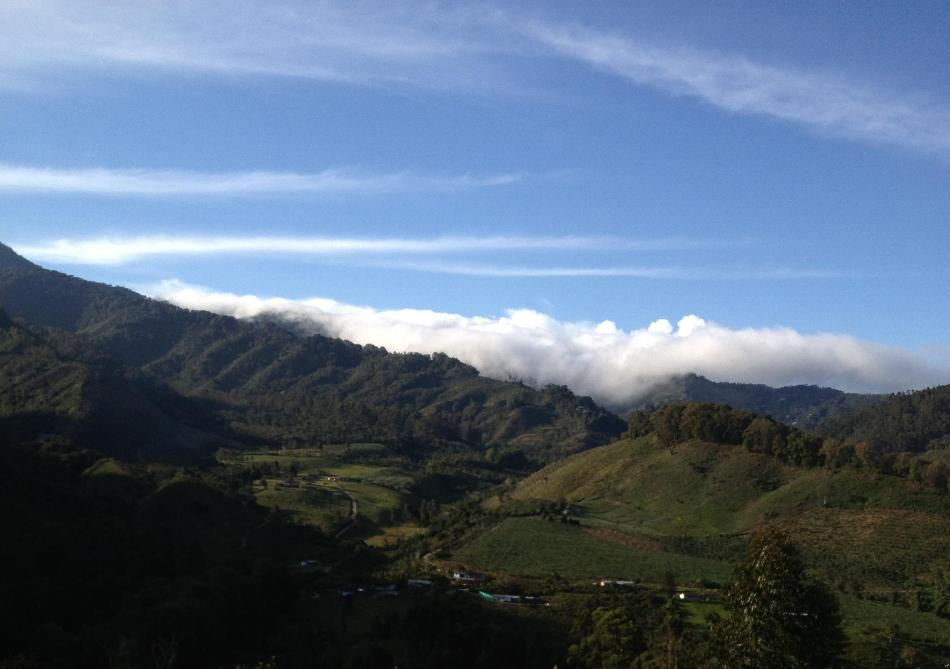
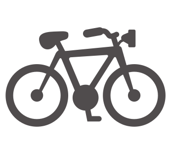

<div class="container-fluid fullContainer">
   <div class="row fullHeight">
      <div class="col-md-10 fullHeight ">
      	<div class="imgMainContainer">
      	    <div class="imgContainer imgMain animated">
      	      
      	    </div>
      	</div>
      </div>
      <div class="col-md-2 fullHeight ">
      	
         <h2>Ciclismo</h2>
      	<p class="lead leadCenter">Contamos con caminos totalmente adecuados para practicar

este deporte o simplemente hacer un recorrido por este 

espacio.  Se debe anotar que no contamos con las bicicletas, 

éstas deben ser traídas por los turistas. </p>
      </div>
   </div>
</div>